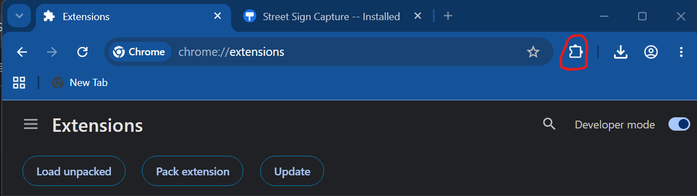
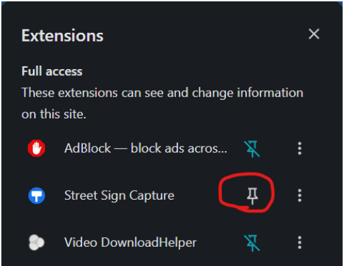

Two things left, both take a few seconds.
Click the puzzle-piece icon in Chrome's toolbar (top right), find "Street Sign Capture" in the list, and click the pin next to it. This just makes the icon easier to find later -- the extension already works without doing this.


The button below opens Street View at a spot with real sign data already loaded, so your first capture is guaranteed to work. Look for the floating "📷 Capture Sign" button in the bottom-right corner of the page.
Loading...